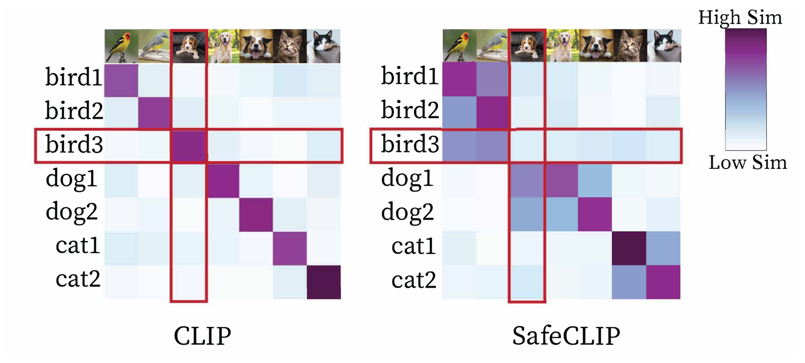

ICML 2024
Better Safe than Sorry
Pre-training CLIP against targeted data poisoning and backdoor attacks
University of California, Los Angeles

Targeted data poisoning success on CC3M
BadNet backdoor success on CC3M
Average zero-shot accuracy versus undefended CLIP across 10 datasets. The prior defense, RoCLIP, loses 9.7.
Overview
CLIP learns from image–caption pairs scraped from the web, and that makes it easy to hijack. Poisoning roughly one in a million training pairs is enough to make it misclassify a chosen image, four orders of magnitude less than a supervised model needs.
The attack works because CLIP's contrastive loss pulls every image toward its caption, including the poisoned ones. SafeCLIP avoids that by never trusting a pair until the model has evidence it belongs together. It first learns images and captions separately, which leaves poisoned pairs far apart. It then trains with the CLIP loss only on the pairs whose image and caption already agree, and keeps learning from the rest one modality at a time. As the model improves, more pairs earn their way into the trusted set.
Across CC3M, Visual Genome and MSCOCO, this drops targeted poisoning success from 93.75% to 0% and backdoor success from up to 100% to 0%, while matching undefended CLIP on zero-shot and linear-probe accuracy.
Method
SafeCLIP runs in three stages. The first two are a short warmup that separates poisoned pairs from clean ones; the third is ordinary pre-training with a trust boundary.
-
Learn images and captions separately
Each encoder is warmed up with unimodal contrastive learning. A poisoned image looks like its true category, not like the category named in its caption, so it clusters with its real neighbors and stays far from the adversarial caption. Positives are drawn from a nearest-neighbor pool rather than from augmentations of the same example, which keeps a small group of near-identical poisoned images from forming a tight cluster of their own.
-
Loosely align, then split
One gentle pass of the CLIP loss gives clean pairs a modest boost in similarity without letting poisoned pairs catch up. SafeCLIP then fits a two-component Gaussian mixture to the image–caption cosine similarities and puts a pair in the safe set when its probability of belonging to the high-similarity component exceeds a threshold t (0.9 by default).
-
Pre-train with a growing safe set
The CLIP loss is applied only to augmented pairs in the safe set, and the risky set keeps contributing through unimodal contrastive learning, so no data is thrown away.
LSafeCLIP = Lunimodal(Drisky) + LCLIP(Dsafe)
After each epoch, similarities are recomputed and the safe set grows by 1% of the data. Only the top 30% of pairs are re-scored, so the update costs about a tenth of a CLIP epoch.
How strict should the split be?
Pick a threshold t. Higher t admits fewer pairs to the safe set and fewer poisons with them. Numbers are from CC1M with 0.05% of pairs poisoned.
Curves are drawn after Figure 2 of the paper; the numbers come from its threshold ablation (Table 6). t = 0.9 is the default used in all main results.
Results
Attack success rate (lower is better) for a targeted data poisoning attack (TDPA) and four backdoor attacks. Models are ResNet-50 CLIP pre-trained from scratch on each dataset with 0.05% of pairs poisoned.
| Method | TDPA | BadNet | Label-consistent | Blended | WaNet |
|---|
Accuracy is preserved
Average change in top-1 accuracy versus undefended CLIP over 10 downstream datasets, pre-trained on CC3M.
| Method | Zero-shot | Linear probe | ImageNet 0-shot |
|---|---|---|---|
| CLIP | — | — | 19.4 |
| RoCLIP | −9.7 | −8.3 | 5.8 |
| SafeCLIP | +0.9 | +0.5 | 18.2 |
And it is cheap
Extra training time on top of undefended training, compared with defenses designed for supervised models.
Where it stops working
At poison rates around 0.5%, the warmup no longer separates most poisoned pairs from clean ones. A small trusted clean dataset is a natural way to extend the defense to that regime.
Citation
@inproceedings{yang2024better,
title = {Better Safe than Sorry: Pre-training {CLIP} against
Targeted Data Poisoning and Backdoor Attacks},
author = {Yang, Wenhan and Gao, Jingdong and Mirzasoleiman, Baharan},
booktitle = {Proceedings of the 41st International Conference
on Machine Learning},
series = {Proceedings of Machine Learning Research},
volume = {235},
publisher = {PMLR},
year = {2024}
}